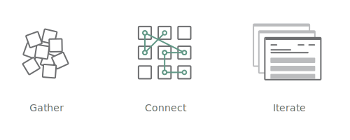

About
Brandon Dorn
brandon.s.dorn@gmail.com
I'm a User Experience designer with a background in the humanities. The kinds of projects I take on usually involve making sense of data, interaction, and context in digital products - the kind of complexity that inspires me to take up graph paper and pencil each day.
I got my start in brand strategy, where I learned that thinking about people - the kind of thinking I did as a Literature major - could solve meaningful business problems. After that I began designing development tools and dashboards, a gauntlet that introduced me to UX and helped inoculate me against visual fluff. My work is marked by a mindful attempt to pare interfaces and visualizations down to their essential form and function. Currently I work for State Farm on internal cloud hosting applications.
Liberal Art is a series of reflections triangulated by design, art, and belief. I'm curious about how the three spheres relate, following an intuition that they are analogies of each other. I've written more about the project and its appellation here.
Process
Rather than follow a prescribed process with my design work, I approach problems with a set of methodologies that fit the task at hand. That said, I've come to recognize three general phases that projects usually go through, which constitute a loosely-defined process. They necessarily overlap, yet each has its distinct purpose.
Gather
Before I can think about something, I need something to think about. At this point I'm collecting two things:
-
Notes on the project itself. These are not ideas toward a solution, but a sense of the purpose, limits, and aspirations of the project. This gives focus to the collecting, but not so much so that it's prescribing a path.
-
Material for thought.
Connect
Iterate
Tools
Mauris eleifend est et turpis.